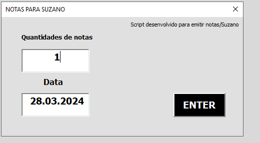

Detalhes do Projeto de Automação da emissão de notas fiscais
Sobre o Projeto
O objetivo principal deste projeto é a automação do processo de emissão de notas fiscais, visando uma significativa redução no tempo requerido e minimização dos erros decorrentes do preenchimento manual. Utilizamos VBA e outras tecnologias para criar uma solução eficiente e confiável.

Características
- Automação da transação ztsd_0010.
- Interface amigável e fácil de usar.

- Integração com sistemas existentes.
- Logs detalhados para acompanhamento de emissões.
Tecnologias Utilizadas
Como Funciona
A automação do processo de emissão de notas fiscais Bracell/Suzano representou um desafio complexo e multifacetado, dado o intrincado sistema de transações envolvido e a necessidade de integrar de forma eficiente com o SAP, que por sua natureza não é particularmente amigável à esse tipo de automação. A implementação dessa automação exigiu uma abordagem meticulosa e uma adaptação criativa às limitações técnicas, culminando na elaboração de um script VBA extenso e altamente personalizado.
O processo manual de emissão de notas fiscais desse tipo, anteriormente, consumia de 4 a 5 minutos por nota, um período substancial que impactava a eficiência operacional e alocava recursos humanos valiosos em tarefas repetitivas. A necessidade de acelerar esse processo, sem comprometer a precisão, motivou a busca por soluções de automação.
A solução encontrada envolveu a manipulação complexa de dados através de um script VBA, projetado especificamente para navegar pelas peculiaridades do SAP e automatizar as etapas de emissão de notas fiscais. Esse script não apenas automatiza a inserção de dados, mas também executa verificações de consistência e ajustes necessários para garantir que as informações estejam corretas e completas.
Um dos maiores desafios enfrentados foi a necessidade de interagir com o SAP de maneira eficaz. Isso exigiu uma compreensão profunda tanto do SAP quanto das linguagens de programação envolvidas, além de um esforço considerável para testar e refinar o script, garantindo que ele funcionasse de forma confiável dentro do ambiente existente.
O resultado desse esforço meticuloso foi uma redução significativa no tempo de processamento por nota fiscal, passando de 4-5 minutos para apenas 40 segundos. Essa melhoria notável na eficiência não apenas liberou recursos humanos para tarefas mais estratégicas, mas também aumentou a capacidade de processamento de notas fiscais, melhorando a agilidade operacional. Além disso, a precisão aprimorada na emissão das notas fiscais reduziu a incidência de erros e o tempo dedicado a correções.